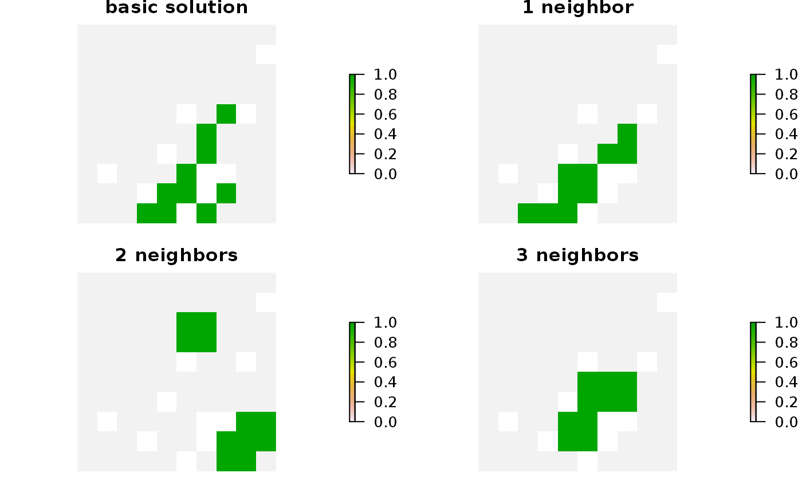
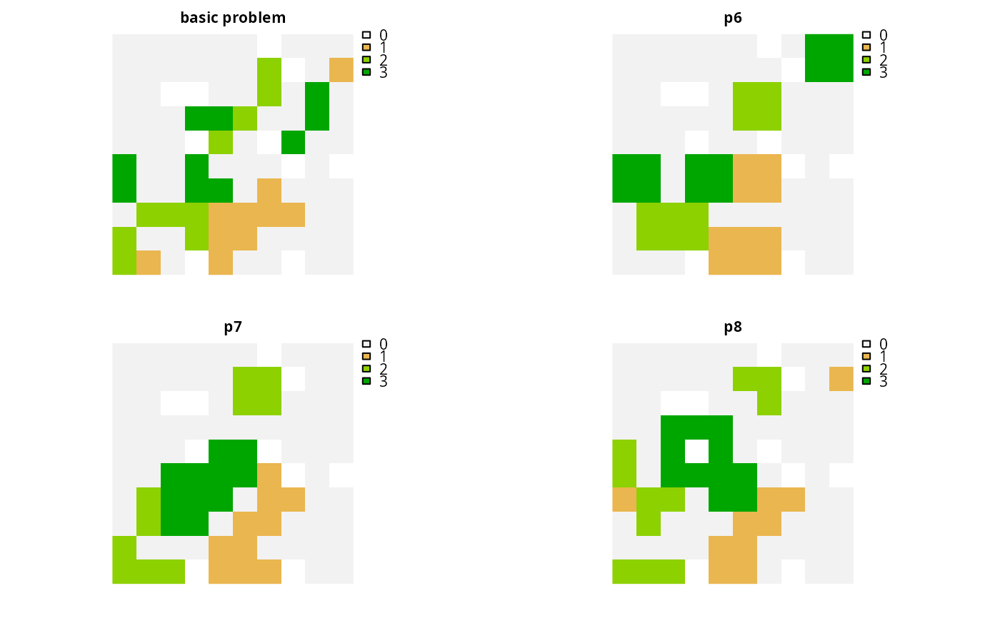

Add constraints to a conservation planning problem() to ensure
that all selected planning units in the solution have at least a certain
number of neighbors that are also selected in the solution.
# S4 method for ConservationProblem,ANY,ANY,ANY
add_neighbor_constraints(x, k, zones, data)
# S4 method for ConservationProblem,ANY,ANY,data.frame
add_neighbor_constraints(x, k, zones, data)
# S4 method for ConservationProblem,ANY,ANY,matrix
add_neighbor_constraints(x, k, zones, data)
# S4 method for ConservationProblem,ANY,ANY,array
add_neighbor_constraints(x, k, zones, data)| x |
|
|---|---|
| k |
|
| zones |
|
| data |
|
Object (i.e. ConservationProblem) with the constraints
added to it.
This function uses neighborhood data identify solutions that surround planning units with a minimum number of neighbors. It was inspired by the mathematical formulations detailed in Billionnet (2013) and Beyer et al. (2016).
The argument to data can be specified using the following formats:
data as a NULL valueneighborhood data should be calculated
automatically
using the adjacency_matrix() function. This is the default
argument. Note that the neighborhood data must be manually defined
using one of the other formats below when the planning unit data
in the argument to x is not spatially referenced (e.g.
in data.frame or numeric format).
data as a matrix/Matrix objectwhere rows and columns represent
different planning units and the value of each cell indicates if the
two planning units are neighbors or not. Cell values should be binary
numeric values (i.e. one or zero). Cells that occur along the
matrix diagonal have no effect on the solution at all because each
planning unit cannot be a neighbor with itself.
data as a data.frame objectcontaining the fields (columns)
"id1", "id2", and "boundary". Here, each row
denotes the connectivity between two planning units following the
Marxan format. The field boundary should contain
binary numeric values that indicate if the two planning units
specified in the fields "id1" and "id2" are neighbors
or not. This data can be used to describe symmetric or
asymmetric relationships between planning units. By default,
input data is assumed to be symmetric unless asymmetric data is
also included (e.g. if data is present for planning units 2 and 3, then
the same amount of connectivity is expected for planning units 3 and 2,
unless connectivity data is also provided for planning units 3 and 2).
If the argument to x contains multiple zones, then the columns
"zone1" and "zone2" can optionally be provided to manually
specify if the neighborhood data pertain to specific zones. The fields
"zone1" and "zone2" should contain the character
names of the zones. If the columns "zone1" and "zone2"
are present, then the argument to zones must be NULL.
data as an array objectcontaining four-dimensions where binary
numeric values indicate if planning unit should be treated
as being neighbors with every other planning unit when they
are allocated to every combination of management zone. The first two
dimensions (i.e. rows and columns) correspond to the planning units,
and second two dimensions correspond to the management zones. For
example, if the argument to data had a value of 1 at the index
data[1, 2, 3, 4] this would indicate that planning unit 1 and
planning unit 2 should be treated as neighbors when they are
allocated to zones 3 and 4 respectively.
Beyer HL, Dujardin Y, Watts ME, and Possingham HP (2016) Solving conservation planning problems with integer linear programming. Ecological Modelling, 228: 14--22.
Billionnet A (2013) Mathematical optimization ideas for biodiversity conservation. European Journal of Operational Research, 231: 514--534.
See constraints for an overview of all functions for adding constraints.
Other constraints:
add_feature_contiguity_constraints(),
add_linear_constraints(),
add_locked_in_constraints(),
add_locked_out_constraints(),
add_mandatory_allocation_constraints,ConservationProblem-method,
add_manual_bounded_constraints(),
add_manual_locked_constraints()
# load data
data(sim_pu_raster, sim_features, sim_pu_zones_stack, sim_features_zones)
# create minimal problem
p1 <- problem(sim_pu_raster, sim_features) %>%
add_min_set_objective() %>%
add_relative_targets(0.1) %>%
add_default_solver(verbose = FALSE)
# create problem with constraints that require 1 neighbor
# and neighbors are defined using a rook-style neighborhood
p2 <- p1 %>% add_neighbor_constraints(1)
# create problem with constraints that require 2 neighbor
# and neighbors are defined using a rook-style neighborhood
p3 <- p1 %>% add_neighbor_constraints(2)
# create problem with constraints that require 3 neighbor
# and neighbors are defined using a queen-style neighborhood
p4 <- p1 %>% add_neighbor_constraints(3,
data = adjacency_matrix(sim_pu_raster, directions = 8))
# \dontrun{
# solve problems
s1 <- stack(list(solve(p1), solve(p2), solve(p3), solve(p4)))
# plot solutions
plot(s1, box = FALSE, axes = FALSE,
main = c("basic solution", "1 neighbor", "2 neighbors", "3 neighbors"))

# }
# create minimal problem with multiple zones
p5 <- problem(sim_pu_zones_stack, sim_features_zones) %>%
add_min_set_objective() %>%
add_relative_targets(matrix(0.1, ncol = 3, nrow = 5)) %>%
add_default_solver(verbose = FALSE)
# create problem where selected planning units require at least 2 neighbors
# for each zone and planning units are only considered neighbors if they
# are allocated to the same zone
z6 <- diag(3)
print(z6)
#> [,1] [,2] [,3]
#> [1,] 1 0 0
#> [2,] 0 1 0
#> [3,] 0 0 1
p6 <- p5 %>% add_neighbor_constraints(rep(2, 3), z6)
# create problem where the planning units in zone 1 don't explicitly require
# any neighbors, planning units in zone 2 require at least 1 neighbors, and
# planning units in zone 3 require at least 2 neighbors. As before, planning
# units are still only considered neighbors if they are allocated to the
# same zone
p7 <- p5 %>% add_neighbor_constraints(c(0, 1, 2), z6)
# create problem given the same constraints as outlined above, except
# that when determining which selected planning units are neighbors,
# planning units that are allocated to zone 1 and zone 2 can also treated
# as being neighbors with each other
z8 <- diag(3)
z8[1, 2] <- 1
z8[2, 1] <- 1
print(z8)
#> [,1] [,2] [,3]
#> [1,] 1 1 0
#> [2,] 1 1 0
#> [3,] 0 0 1
p8 <- p5 %>% add_neighbor_constraints(c(0, 1, 2), z8)
# \dontrun{
# solve problems
s2 <- list(p5, p6, p7, p8)
s2 <- lapply(s2, solve)
s2 <- lapply(s2, category_layer)
s2 <- stack(s2)
names(s2) <- c("basic problem", "p6", "p7", "p8")
# plot solutions
plot(s2, main = names(s2), box = FALSE, axes = FALSE)

# }